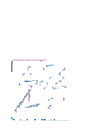
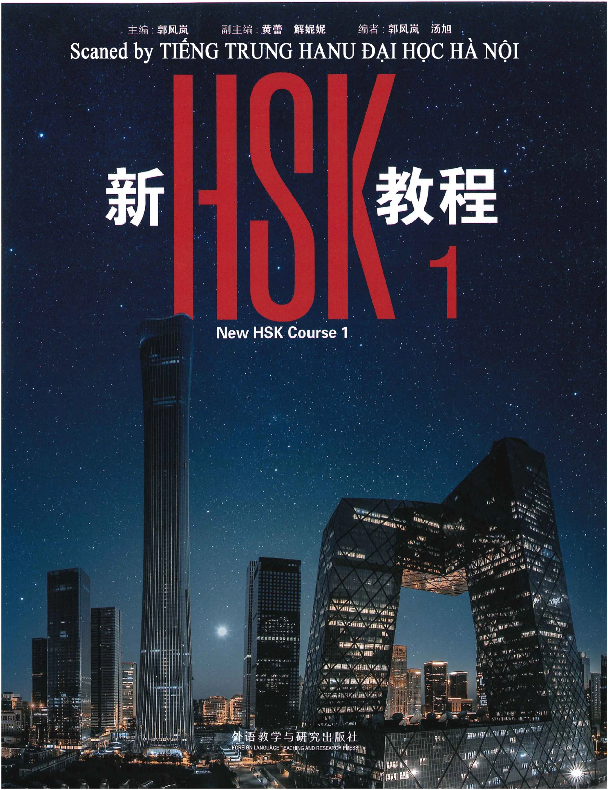
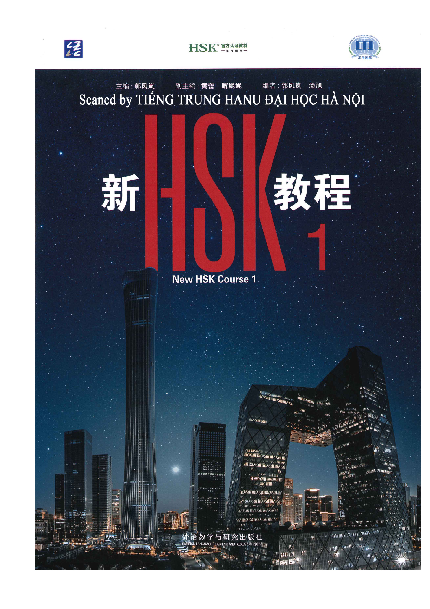

HSK®官方认证教材HSK® Official Certified CoursebookHSK® Официальный сертифицированный учебник
汉考国际Chinese Testing InternationalChinese Testing International
主编：郭风岚 副主编：黄蕾 解妮妮 编者：郭风岚 汤旭Chief Editor: Guo Fenglan Associate Chief Editors: Huang Lei, Xie Nini Editors: Guo Fenglan, Tang XuГлавный редактор: Го Фэнлань Зам. гл. редактора: Хуан Лэй, Се Нини Редакторы: Го Фэнлань, Тан Сюй

新HSK教程 1New HSK Course 1Новый курс HSK 1
外语教学与研究出版社FOREIGN LANGUAGE TEACHING AND RESEARCH PRESSИЗДАТЕЛЬСТВО ПРЕПОДАВАНИЯ И ИССЛЕДОВАНИЯ ИНОСТРАННЫХ ЯЗЫКОВ

-运HSK官方认证教材一汉国一汉考国际主编：郭风岚副主编：黄蕾解妮妮编者：郭风岚汤旭Scaned by TiÉNG TRUNG HANU DAI HOC HÅ NOI新性主New HSK Course 1AUAHMHEEN1HWAWWAUAMTOAYAMVAG中AFAPGCV.ACVMmVaVAUamVAnAVSAOMVEARAA外语教学与研究出版社FOREIGN LANGUAGE TEACHING AND RESEARCH PRESS